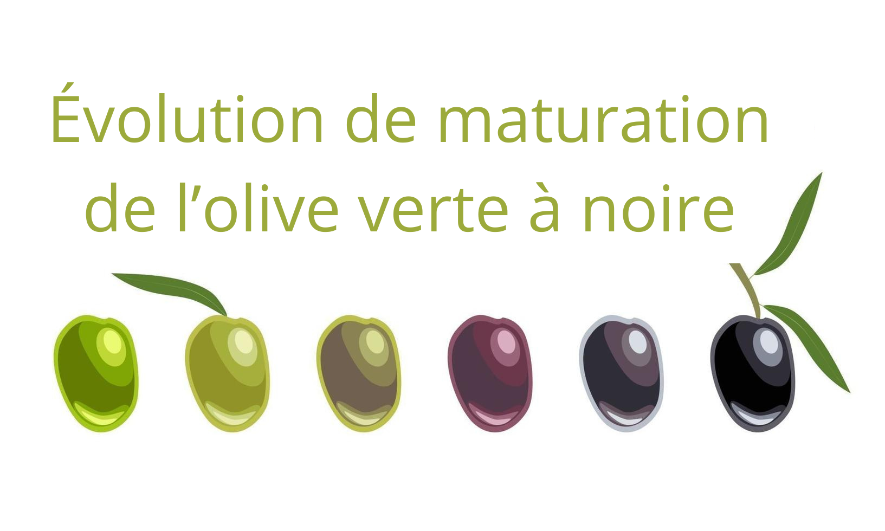
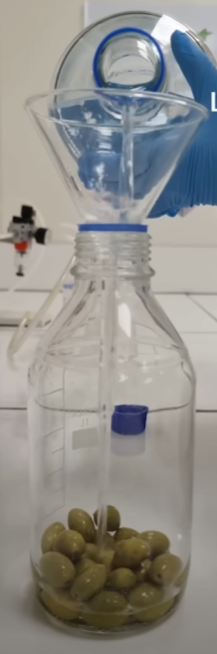
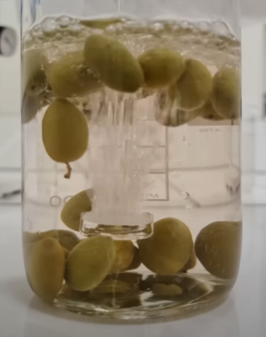
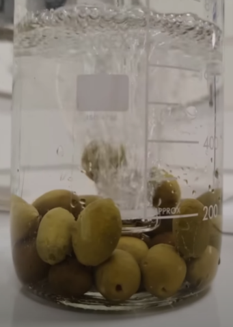
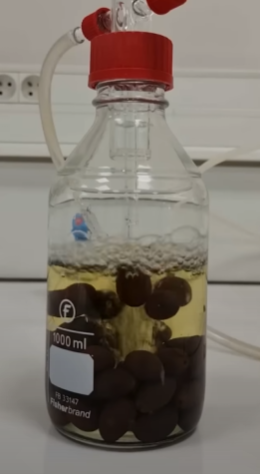
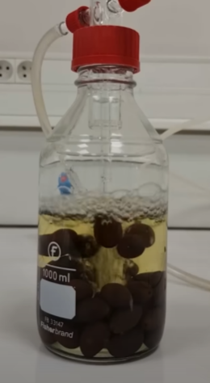
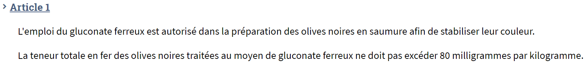
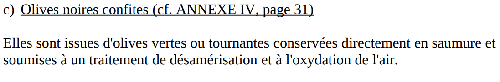
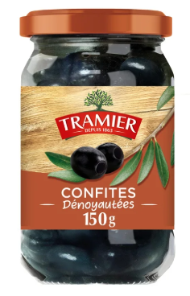
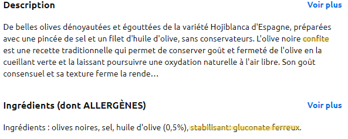

Les olives noires, des olives transraciales !?
Vendredi 29 novembre
Dans les grandes surfaces sont vendues un grand nombre d'olives, de plusieurs couleurs :
- vertes
- violacé dites "tournantes"
- noires
Avec noyeau ou dénoyauté et sous plusieurs formes, comme la tapenade.
Il faut savoir que toutes les olives poussent sur le même arbre, et que la couleur de ces dernières est un stade de maturité.
L'olive commence tout d'abord par être verte, puis tournante et noire quand elle est mûre. Cela s'appelle la véraison.

Certains industriels colorent les olives vertes pour les faire paraîtres des olives noires qui sont plus longues à obtenir, principalement dans un but économique, trompant la moyenne des utilisateurs qui ne saurait pas faire la différence entre une olive verte et "verte", car pensant que ces deux olives poussent sur des oliviers différents et se faisant tromper par les appellations et normes commerciales malicieuses, en plus de ne pas prendre le temps de regarder les descriptions ou même simplement s'intéresser à la fabrication des choses.
Procédé de tromperie colorante :
Les olives sont tout d'abord récoltées sur les oliviers, généralement à la fin de l'été.
Les vertes sont ensuite plongées dans une solution alcaline, un bain de soude ou de la potasse faiblement concentrée, puis dans de la saumure.
Cela est dans le but de retirer l'amertume présente dans le fruit.
Ce procédé s'appelle la désamérisation.

Ensuite, de l'air comprimé est projeté et les phénoliques vont s'oxyder et colorer l'olive en noir en quelques jours.

Les olives sont lavées de la solution alcaline, puis ils continuent l'oxydation et rajoutent du gluconate ferreux "E579", (qui selon les "scientifiques" ne présente aucun danger pour la santé.) Pour que la teinte de l'olive obtenue se fixe sur le fruit.

 

Elle a changé de race en même temps qu'elle a vielli.
À savoir : L'utilisation de Gluconate Ferreux est autorisée jusqu'à 80 milligrammes par kilogramme selon un arrêté du 14 mars 1986 ci-dessous :

Site Source Arrêté
Comment savoir quelles sont les vrais et fausses olives noires ?
L'appellation "confites", signifie que les olives ont été colorées et ce même si le produit fait l'éloge de manières naturelles.
Ci-dessous la définition de l'appellation officielle :

Site Source Appelation
Exemple : "Olives noires confites dénoyautées" de la grande marque Tramier, ils utilisent du gluconate ferreux. et en plus de leurs textes de charlatans, insistent pour tromper avec le terme "sans conservateurs". C'est de la manipulation sous couvert de "non-mensonge".


Dans la liste des ingrédients, l'utilisation de : "Gluconate ferreux", "Gluconate de fer" ou sous l'appellation "E579"